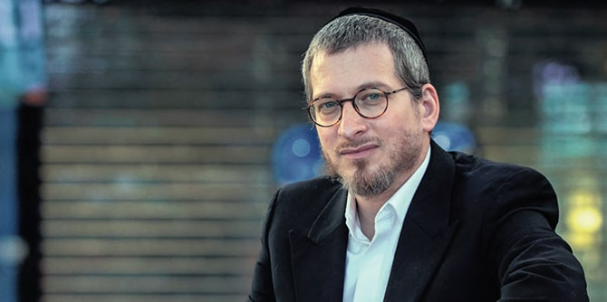
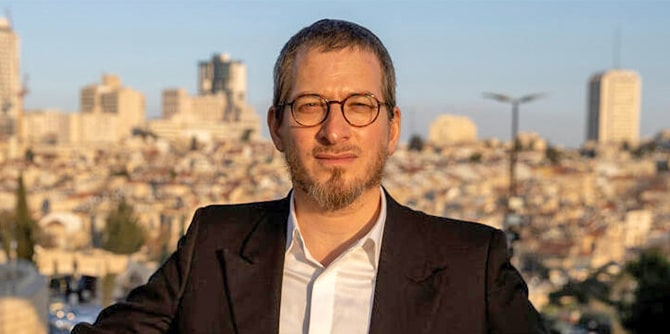

Menachem Bombach (Photo: Amit Shabi, Calcalist)
Mandel senior project manager
Rabbi Menachem Bombach, a graduate of the pilot program for the Mandel Program for Leadership in the Haredi Community, is the founder and CEO of the Netzach ultra-Orthodox educational network, which comprises 12 schools – elementary, middle and high schools – that offer a unique curriculum combining both religious and secular studies (i.e., math, science and English).
Bombach's decision to enter the field of education was rooted in his experience growing up in the highly insular neighborhood of Mea Shearim in Jerusalem, where he spoke Yiddish, received no secular education, and only learned Hebrew at a later age. This experience led him to recognize a pressing need for educational institutions in Haredi society that offer secular studies as part of their curriculum and provide students with important life skills that will enable them to participate in the workforce and will hopefully contribute to a stable ultra-Orthodox identity and future.
Students in the Netzach yeshiva meet with MK Chili Troper (Photo: Torah Academy)
In the interview in Calcalist, Bombach addresses the widely held belief within the Haredi community that the average yeshiva student will be able to master any secular subject easily: "I founded the preparatory school at the Hebrew University out of a desire to enable Haredim to get into academia, but I saw how many people dropped out because they didn't make it. All the myths that were sold to us about a yeshiva student who could master everything in just one night were broken." For this reason, Bombach maintains that secular education must begin at a young age.
In addition to secular studies, Netzach schools emphasize the personal development of students. As Bombach sees it, this is all the more important as the Haredi community transitions from a minority to an increasingly large segment of the population. In his words, "You must develop a sense of responsibility toward other people outside your sector, develop a broad and strategic perception of reality, and cultivate interpersonal skills and critical thinking. This should not begin at age 20; this awareness should be instilled from a young age."

Menachem Bombach (Photo: Amit Shabi, Calcalist)
Menachem Bombach has faced numerous criticisms from within the ultra-Orthodox community for introducing secular studies to his schools. Despite this, he has a great deal of empathy for the concerns of the community and describes his approach as moderate, based on a profound respect for rabbinic leaders. "We need to be careful to make changes slowly so that we don't lose the treasures we have, which are important to the entire Jewish people." He added, "it is in the interest of all Israelis that we preserve our [ultra-Orthodox] traits and lifestyles."
Read the full interview in Calcalist (Hebrew) >>
{kind=link}
{kind=link}
{kind=link}